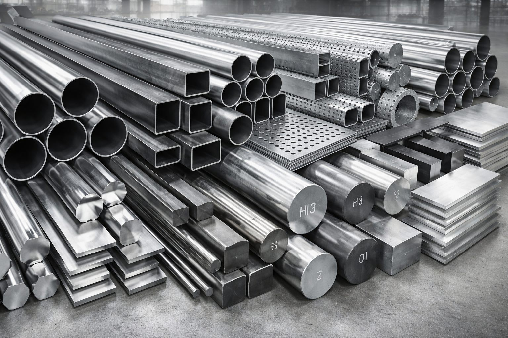
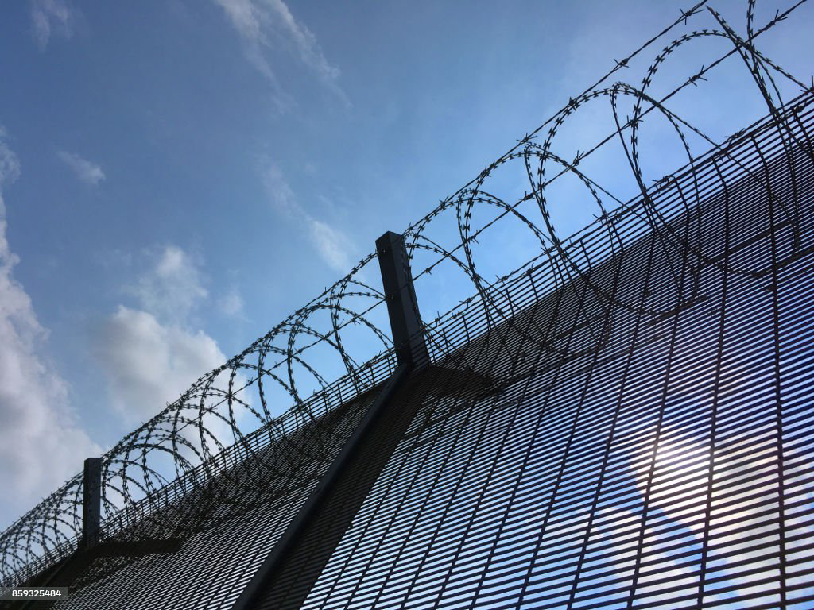

About Kestrel Metal
Born in the
Wire Mesh Capital.
Built on Quality.
We built one of Anping's most trusted manufacturing operations by moving faster, staying leaner, and refusing to compromise on quality. Now we're applying that same instinct to something bigger.
Same drive. New frontier.
We built our reputation by challenging how wire mesh has always been manufactured — and have become one of the most trusted suppliers in the industry, delivering to 30+ countries across 6 continents. Now we're expanding into advanced manufacturing, sustainable production, and custom engineering solutions that the world needs.
Learn more about our ESG commitmentThree Pillars, One Standard
From raw wire to finished infrastructure, we control every stage of the process. That's how we guarantee quality at scale.

Wire Mesh Manufacturing
Nearly 50,000 tonnes of wire mesh products move through our production lines every year. That's not just scale — it's leverage. It funds our R&D. Tests our technology. Proves what works under real pressure.
Learn more
Fencing & Security
We're building the fencing solutions the world needs — from perimeter security to agricultural enclosures. Engineered for the harshest environments, delivered with precision. No shortcuts.
Learn more
Custom Engineering
Real change comes from innovation. Through our R&D center, we drive custom solutions the industry needs — from specialized alloys to bespoke mesh configurations. We prove it on our own lines first.
Learn moreHow We Make It
No stock photos of other people's factories. This is our floor, our lines, our craft — where 50,000 tonnes a year actually happens.

Precision Welding, Engineered
Computer-controlled resistance welding and robotic handling keep every weld point consistent from the first panel to the ten-thousandth. Wire alignment holds within ±0.5mm — batch after batch, year after year.

Surface Treatment That Outlasts
Hot-dip galvanizing, PVC extrusion and powder coating lines deliver uniform coverage tested beyond 3,000 hours of salt spray. Coatings engineered for coastal zones, chemical plants and everything in between.
A world where infrastructure is built with materials that last, manufactured responsibly, and delivered with integrity — creating lasting value for people and the planet.
Our Purpose
To accelerate the adoption of high-performance metal products globally — rapidly, responsibly and profitably.
Technical Downloads
Everything your engineering and procurement teams need — datasheets, installation guides, CAD drawings and certifications, ready when you are.
Technical Datasheets
Product specifications, load capacity data and coating standards for engineering review.
Installation Guides
Step-by-step manuals for fencing, panels and gabion assembly — from foundation to fix.
CAD Drawings
DWG, DXF and STEP files of panels, posts and gate hardware for direct design integration.
Certifications
ISO 9001 certificate, CE declaration and independent SGS material test reports.
Quality You Can Verify
Trust isn't a claim — it's a paper trail. Every batch we ship can be traced, tested and proven against the standards your project demands.

ISO 9001:2015 Certified
A certified quality management system covering every process from wire drawing to final dispatch, audited annually.

Strength & Load Testing
Tensile, weld-shear and cyclic load testing verify mechanical performance before any product leaves the plant.

Global Standards Compliance
Products manufactured and documented to ASTM, EN and GB specifications for seamless approval on international projects.

Full Material Traceability
Wire mill certificates, gauge verification and batch-level records available for every order, free of charge.
Quality means everything.
So does how we make it.
We don't just meet standards — we set them. ISO 9001 certified, CE marked, and committed to sustainable manufacturing practices across every production line.
Delivering to 30+ Countries
From Anping to six continents — our products are working right now on construction sites, farms, mines and critical infrastructure around the world.


Company Milestones
From a small workshop to a global operation — here's how we got here.
Company Founded
Kestrel Metal was established in Anping, Hebei, China, starting as a small wire mesh workshop with a big vision.
Export to Europe
Began exporting products to European markets, marking the start of our international journey and proving our quality meets the highest global standards.
New Production Facility
Relocated to a modern 20,000 sqm production facility with automated manufacturing lines, doubling our capacity.
ISO & CE Certification
Achieved ISO 9001 and CE certifications, validating our quality management system and product compliance across global markets.
30+ Countries Served
Expanded global reach to serve customers in over 30 countries across 6 continents, with dedicated teams in key markets.
Advanced R&D Center
Launched our dedicated R&D center with 60+ specialists, driving innovation in coating technologies, alloy formulations, and sustainable manufacturing.
Featured Projects
Talk is cheap. These are the installations that carry our name — flood defences, solar farms and high-security enclosures doing real work.

Flood Defence Embankment
Gabion structures strengthen riverbank protection in a flood-critical region — engineered for decades of hydraulic stress.
View case study
500MW Solar Farm Perimeter
Chain link security fencing secures a utility-scale solar installation across demanding terrain and remote access points.
View case study
Petrochemical Plant Enclosure
High-security fencing protects a petrochemical facility where failure is not an option — corrosion-resistant, climb-resistant, verified.
View case studyReady to Build
Something Together?
Let's discuss your project requirements and explore how Kestrel Metal can deliver the solutions you need.